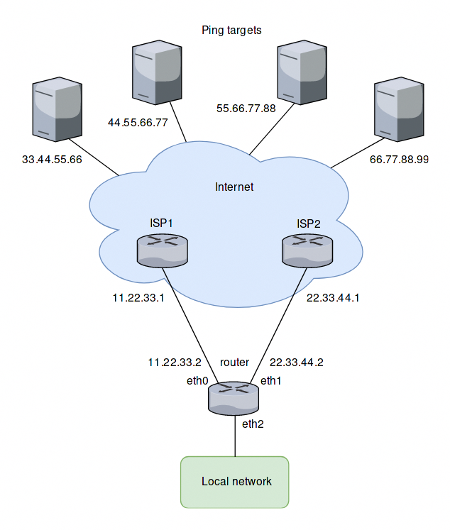
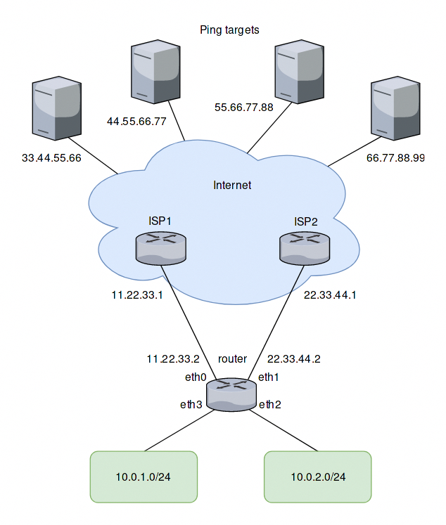

WAN Load Balancer examples
Example 1: Distributing load evenly
The setup used in this example is shown in the following diagram:
{kind=link}
Overview
All traffic coming in through eth2 is balanced between eth0 and eth1 on the router.
Pings will be sent to four targets for health testing (33.44.55.66, 44.55.66.77, 55.66.77.88 and 66.77.88.99).
All outgoing packets are assigned the source address of the assigned interface (SNAT).
eth0 is set to be removed from the load balancer’s interface pool after 5 ping failures, eth1 will be removed after 4 ping failures.
Create static routes to ping targets
Create static routes through the two ISPs towards the ping targets and commit the changes:
set protocols static route 33.44.55.66/32 next-hop 11.22.33.1
set protocols static route 44.55.66.77/32 next-hop 11.22.33.1
set protocols static route 55.66.77.88/32 next-hop 22.33.44.1
set protocols static route 66.77.88.99/32 next-hop 22.33.44.1
Configure the load balancer
Configure the WAN load balancer with the parameters described above:
set load-balancing wan interface-health eth0 failure-count 5
set load-balancing wan interface-health eth0 nexthop 11.22.33.1
set load-balancing wan interface-health eth0 test 10 type ping
set load-balancing wan interface-health eth0 test 10 target 33.44.55.66
set load-balancing wan interface-health eth0 test 20 type ping
set load-balancing wan interface-health eth0 test 20 target 44.55.66.77
set load-balancing wan interface-health eth1 failure-count 4
set load-balancing wan interface-health eth1 nexthop 22.33.44.1
set load-balancing wan interface-health eth1 test 10 type ping
set load-balancing wan interface-health eth1 test 10 target 55.66.77.88
set load-balancing wan interface-health eth1 test 20 type ping
set load-balancing wan interface-health eth1 test 20 target 66.77.88.99
set load-balancing wan rule 10 inbound-interface eth2
set load-balancing wan rule 10 interface eth0
set load-balancing wan rule 10 interface eth1
Example 2: Failover based on interface weights
This example uses the failover mode.
Overview
In this example, eth0 is the primary interface and eth1 is the secondary interface. To provide simple failover functionality. If eth0 fails, eth1 takes over.
Create interface weight based configuration
The configuration steps are the same as in the previous example, except rule 10. So we keep the configuration, remove rule 10 and add a new rule for the failover mode:
delete load-balancing wan rule 10
set load-balancing wan rule 10 failover
set load-balancing wan rule 10 inbound-interface eth2
set load-balancing wan rule 10 interface eth0 weight 10
set load-balancing wan rule 10 interface eth1 weight 1
Example 3: Failover based on rule order
The previous example used the failover command to send traffic through eth1 if eth0 fails. In this example, failover functionality is provided by rule order.
Overview
Two rules will be created, the first rule directs traffic coming in from eth2 to eth0 and the second rule directs the traffic to eth1. If eth0 fails the first rule is bypassed and the second rule matches, directing traffic to eth1.
Create rule order based configuration
We keep the configuration from the previous example, delete rule 10 and create the two new rules as described:
delete load-balancing wan rule 10
set load-balancing wan rule 10 inbound-interface eth2
set load-balancing wan rule 10 interface eth0
set load-balancing wan rule 20 inbound-interface eth2
set load-balancing wan rule 20 interface eth1
Example 4: Failover based on rule order - priority traffic
A rule order for prioritizing traffic is useful in scenarios where the secondary link has a lower speed and should only carry high priority traffic. It is assumed for this example that eth1 is connected to a slower connection than eth0 and should prioritize VoIP traffic.
Overview
A rule order for prioritizing traffic is useful in scenarios where the secondary link has a lower speed and should only carry high priority traffic. It is assumed for this example that eth1 is connected to a slower connection than eth0 and should prioritize VoIP traffic.
Create rule order based configuration with low speed secondary link
We keep the configuration from the previous example, delete rule 20 and create a new rule as described:
delete load-balancing wan rule 20
set load-balancing wan rule 20 inbound-interface eth2
set load-balancing wan rule 20 interface eth1
set load-balancing wan rule 20 destination port sip
set load-balancing wan rule 20 protocol tcp
set protocols static route 0.0.0.0/0 next-hop 11.22.33.1
Example 5: Exclude traffic from load balancing
In this example two LAN interfaces exist in different subnets instead of one like in the previous examples:
{kind=link}
Adding a rule for the second interface
Based on the previous example, another rule for traffic from the second interface eth3 can be added to the load balancer. However, traffic meant to flow between the LAN subnets will be sent to eth0 and eth1 as well. To prevent this, another rule is required. This rule excludes traffic between the local subnets from the load balancer. It also excludes locally-sources packets (required for web caching with load balancing). eth+ is used as an alias that refers to all ethernet interfaces:
set load-balancing wan rule 5 exclude
set load-balancing wan rule 5 inbound-interface eth+
set load-balancing wan rule 5 destination address 10.0.0.0/8